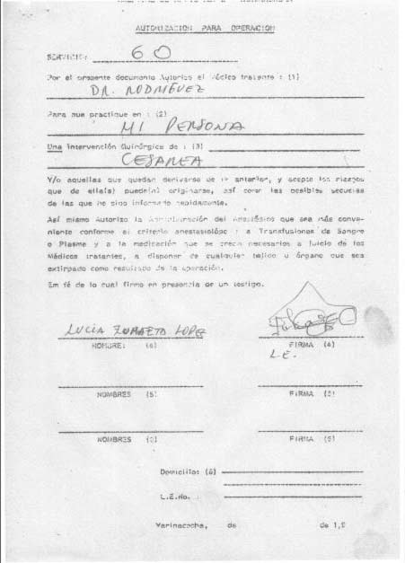

La señora Lucía Zumaeta López fue una víctima más de la estrategia que aplicaba el Hospital Amazónico, ubicado en la ciudad de Pucallpa, para esterilizar sin consentimiento. Los doctores aprovechaban el momento en que las mujeres daban a luz, fuera con cesárea o por parto natural, para ligarlas.
Lucía estaba embarazada de su última hija, Ruth Sánchez Zumaeta, y acudió junto con su esposo al hospital para dar a luz.
“Me hicieron la ligadura y la cesárea al mismo tiempo. A mí no me han avisado, yo no sabía, así ha sido”.
Recién al día siguiente las enfermeras le contaron a su esposo la verdad. Él les reclamó, pero ellas respondieron lo que suelen repetir en costa, sierra y selva; en postas de salud en zonas rurales o en modernos hospitales en la ciudad: “Nosotros estamos ordenados por el Gobierno, solo cumplimos órdenes”.
En su historia clínica, conseguida por La República, está indicado que el 22 de setiembre de 1998 los médicos escribieron: “OP CSTP + LTB”, es decir: Operación de Cesárea y al mismo tiempo Bloqueo Tubárico Bilateral, comúnmente conocido como ligadura de trompas.
Además, el documento señala que Lucía tenía Preeclampsia Severa, una grave condición médica en la cual la paciente no está en la condición de tomar decisiones en lo absoluto.
Pero eso no es todo. La historia clínica muestra que la señora Zumaeta consintió una cesárea, pero no consigna en ninguna de sus 73 páginas que aceptará que la esterilizaran.

Lucía Zumaeta López no denunció en su momento por desconocimiento, pero hoy que ha roto su silencio está dispuesta a hacerlo. Ella está esperando que vaya La Fiscalía a tomar su testimonio, y el del resto de cientos de sus compañeras shipibas.
AVISO URGENTE: ¡¡¡HASTA EL DÍA DE HOY LA FISCALÍA NO HA IDO A RECOGER LOS TESTIMONIOS DE LAS SEÑORAS SHIBIBAS, Y SIN EMBARGO YA ARCHIVÓ EL CASO !!!